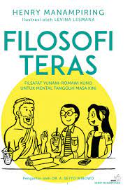

Home
KESEHATAN MENTAL
Kamu, dirimu, sama seperti siapapun di alam semesta, berhak mendapat cinta dan kasih sayang

READ ME :
--------------
 

FILOSOFI TERAS... LOVING THE WOUNDED SOUL... KESEHATAN MENTAL INDONESIA.. REASON TO STAY ALIVE... WHAT IS YOUR-LOVE LANGUAGE... MENTAL HEALTH HANDBOOK...